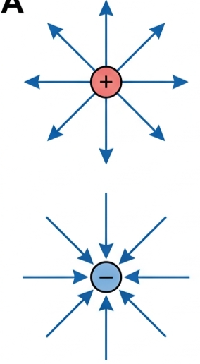
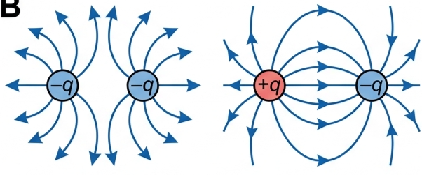
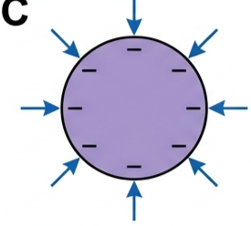
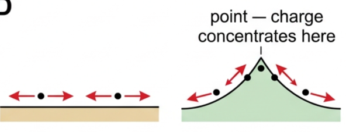
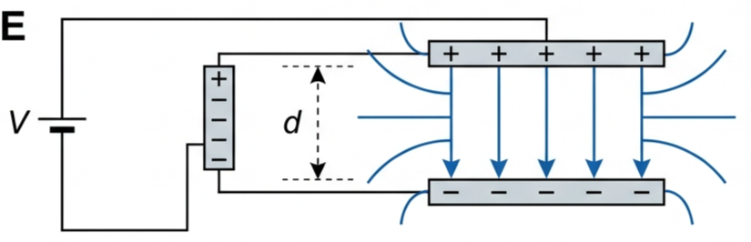
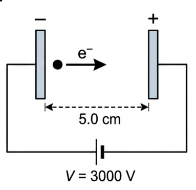
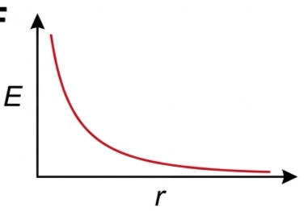
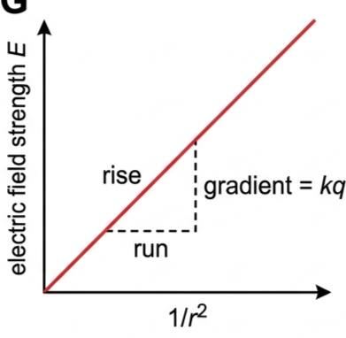
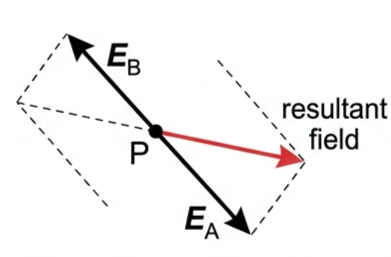
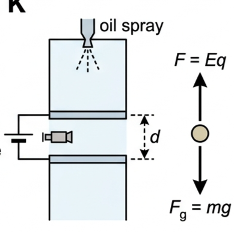

Part of D.2 Electric and Magnetic Fields · Unit D — IB Physics 2023
2 Lesson 2 of 5 · D.2 Electric and Magnetic Fields
Electric Field Strength
A charge doesn't just push or pull its neighbours — it fills the space around it with a field. This lesson defines that field's strength, gives you the two formulas that measure it, and shows how several fields combine into one.
🎯 Hook – a region, not a push
A charge sitting alone in empty space isn't doing anything to anyone — until a second charge wanders nearby and feels a force. Physicists describe this by saying the first charge sets up a region of influence around itself, called an electric field, whether or not a second charge is there to feel it. We map it using field lines: by convention, drawn so they always point in the direction of the force on a small positive test charge.

Fig 1 — Radial fields around isolated point charges (Fig D2.13). Lines point away from a positive charge and toward a negative one, thinning out with distance.
💡 Diagnostic question (think – then read on) — in Fig 1, the field lines are packed close together near each charge and spread apart further away. What does that tell you about the field strength at each location? Field strength is read directly from line density: closely spaced lines near the charge mean a strong field, and the widely spaced lines further out mean a weak field.
Core knowledge
🧲 Field lines and conductors
An electric field is a region in which a charge would experience an electric force. Field lines never cross, and the field is strongest wherever they are densest. Figure 1 showed the two simplest patterns; put two charges near each other and their fields combine into new shapes — like charges curve away from each other (they repel), opposite charges curve from the positive one into the negative one (they attract).

Fig 2 — Left: field around two similar (here, negative) point charges — lines curve away from each other, never crossing (Fig D2.14). Right: field around opposite point charges — lines leave + and terminate on − (Fig D2.15).
On a charged conducting sphere, the mobile electrons repel each other and spread evenly over the outer surface, so the field outside is identical to that of a point charge at the centre — and there is no field inside the sphere. Electric field lines must always be perpendicular to a conducting surface. If they weren't, there would be a component of force along the surface, and that would push the mobile charges along it until the tangential component vanished.

Fig 3 — A charged conducting sphere (Fig D2.16): field lines meet the surface at right angles, and the interior is field-free.
On a flat conducting surface, the forces between neighbouring mobile charges are parallel to the surface, so charge spreads out evenly. On a curved surface, those same forces are no longer parallel to the surface and vary with the curvature — which concentrates charge wherever the curvature is sharpest, i.e. near points. This is why field lines pack tightly near a sharp conductor.

Fig 4a — Flat vs curved surfaces (Fig D2.17): only on a curved surface do the inter-charge forces have a component that redistributes charge unevenly.
📐 Defining electric field strength
Electric field strength, \(E\), is the electric force per unit charge that would be experienced by a small positive test charge placed at a point:
Electric field strength · SI unit N C⁻¹
$$E = \frac{F}{q}$$
✍️ Worked example D2.2. A force of \(3.4\times10^{-6}\) N acts on a point charge of \(6.7\) nC. \(E = F/q = (3.4\times10^{-6})/(6.7\times10^{-9}) = 5.1\times10^{2}\ \text{N C}^{-1}\). There isn't enough information here to know the field's direction — magnitude only.
For the special case of the uniform field between parallel metal plates, work done moving a charge \(q\) from one plate to the other equals both force × distance and potential difference × charge: \(W = Fd = Vq\). Rearranging with \(E = F/q\) gives:
Field between parallel plates
$$E = \frac{V}{d}$$
This shows \(\text{V m}^{-1}\) is equivalent to \(\text{N C}^{-1}\) as a unit for \(E\). The field is weaker and non-uniform beyond the edges of the plates; midway between the edges, the field strength is half its maximum value.

Fig 5 — A uniform field between parallel plates (Fig D2.19). The top plate (connected to the battery's + terminal) becomes positive, the bottom negative.
✍️ Worked example D2.3. Plates 0.50 cm apart: what p.d. creates a field of \(1.0\times10^{6}\ \text{V m}^{-1}\)? \(V = Ed = (1.0\times10^{6})(0.0050) = 5.0\times10^{3}\ \text{V}\).
At atomic scales, the electronvolt is a more convenient energy unit than the joule: one electronvolt is the energy gained by a charge of \(1.60\times10^{-19}\) C accelerated through a p.d. of 1.00 V.
The electronvolt
$$1\ \text{eV} = 1.60\times10^{-19}\ \text{J}$$
An electron accelerated through 3000 V gains 3000 eV without further calculation. Likewise a proton accelerated by 5 kV gains 5 keV, and a doubly-charged ion accelerated by 2000 V gains 4 keV.
✍️ Numerical example. An electron (\(m = 9.110\times10^{-31}\) kg, \(q = -1.60\times10^{-19}\) C) is accelerated across 5.0 cm by a p.d. of 3000 V, starting from rest. Work done \(W = qV = 3000 \times (1.60\times10^{-19}) = 4.80\times10^{-16}\) J — also expressible directly as 3000 eV. Setting this equal to \(\tfrac12mv^2\) gives \(v = 3.25\times10^{7}\ \text{m s}^{-1}\).

Fig 6 — Geometry for the numerical example: an electron accelerated through 3000 V across a 5.0 cm gap.
🔬 Field around a point charge & combining fields
The strength of the field around a point charge decreases with the square of the distance:
Field due to a point charge
$$E = \frac{F}{q} = \frac{kq}{r^{2}}$$
✍️ Worked example D2.4. Field at \(r = 1.0\) m from \(q = +2.9\times10^{-8}\) C: \(E = kq/r^2 = (8.99\times10^9)(2.9\times10^{-8})/1.0^2 = 260\ \text{N C}^{-1}\).
The field strength is negative if the source charge is negative (arrows point inward rather than outward).

Fig 7 — \(E\) against \(r\) for a positive point charge (Fig D2.22): a rapid inverse-square decay.
Because \(E\) is a vector, electric fields from separate charges combine by vector addition. On the line joining two charges, this is straightforward: e.g. a field of \(420\ \text{N C}^{-1}\) to the left and \(550\ \text{N C}^{-1}\) to the right combine to give \(130\ \text{N C}^{-1}\) to the right. Off that line, use a scale drawing, a parallelogram, or trigonometry.

Fig 8 — Determining a resultant field at point P (Fig D2.23) using the parallelogram rule.
🔗 Nature of science — electric vs gravitational force. The electric force between a proton and an electron is about \(10^{39}\times\) greater than the gravitational force between them, yet gravity dominates on the scale of planets and stars. Both follow an inverse-square law, but gravity is always attractive and grows with mass, while electric charges are usually approximately balanced in bulk matter — so large-scale electrostatic effects mostly cancel out, leaving gravity to dominate. (Linking question — this connects to the relative strengths of the four fundamental forces in Topics D.1, D.2, E.1 and E.3.)
Graph mastery
📈 Graphs every examiner uses
Graph type
Axes (X, Y)
Shape
What to read
\(E\) vs \(r\) (point charge)
X: distance \(r\) Y: field strength \(E\)
Steep inverse-square curve, asymptotic to both axes
Doubling \(r\) divides \(E\) by 4; never crosses zero for a single charge
\(E\) vs \(1/r^2\)
X: \(1/r^2\) Y: field strength \(E\)
Straight line through the origin
Gradient = \(kq\), so \(q = \text{gradient}/k\) — the standard way to linearise the point-charge law
\(E\) vs \(d\) (parallel plates, fixed \(V\))
X: separation \(d\) Y: field strength \(E\)
Inverse (hyperbolic) curve
Halving \(d\) doubles \(E\); read any point directly off \(E = V/d\)
Fig 7 (repeated) — \(E\) vs \(r\): the raw inverse-square relationship.

Fig 9 — \(E\) vs \(1/r^2\): the same relationship, linearised for gradient analysis.
Worked examples
✍️ Worked example – field between parallel plates and the electronvolt
1
Identify: a uniform-field problem. Use \(E = V/d\) for the field, then \(W = qV\) for the energy gained by an electron crossing the gap.
Equation: \(E = V/d = 15\,000/0.080 = 1.875\times10^{5}\ \text{V m}^{-1}\). In eV, the electron gains exactly 15 000 eV. In joules: \(W = eV = (1.60\times10^{-19})(15\,000)\).
4
Answer: \(E = 1.9\times10^{5}\ \text{V m}^{-1}\) (2 s.f.); the electron gains 15 000 eV \(= 2.4\times10^{-15}\ \text{J}\).
✍️ Worked example – lightning, a huge uniform field (nature of science)
A simplified model treats a storm cloud and the ground as giant charged "plates" with a uniform field between them (Fig D2.28: positive charge collects at the cloud top, negative at its base, with induced positive charge on the ground beneath).
1
Identify: apply \(E = V/d\) to find the field, then \(I = \Delta q/\Delta t\) and \(P = IV\) to find the power and total energy of the strike.
2
Data: p.d. \(V = 2.0\times10^{6}\) V; cloud-to-ground separation \(d = 0.5\) km \(= 500\) m; charge transferred \(\Delta q = 3000\) C in \(\Delta t = 0.2\) s.
3
Equation: \(E = V/d = (2.0\times10^6)/500\). Current \(I = \Delta q/\Delta t = 3000/0.2\). Power \(P = IV\). Energy \(= P\Delta t\).
Fig 10 — Simplified model of the electric field beneath a storm cloud (Fig D2.28).
Applications & extensions
✈️ Real-world: static dischargers on aircraft
Small pointed rods trail from the wings and tail of an aircraft. Friction with the air charges the aircraft in flight, and because field lines pack tightly near sharp points (where curvature — and so charge — is concentrated), the local field at each rod's tip becomes strong enough to ionise the surrounding air. This lets charge bleed away gradually and safely as a faint glow (a corona discharge) instead of building up towards a damaging spark.
✓ Examiner tip: for "why are pointed conductors used to discharge static", always mention the concentrated field and that it ionises the air, giving a continuous, controlled discharge rather than a spark.
🚀 HL Extension – Millikan confirms charge is quantised
Millikan and Fletcher balanced gravity against an electric force on tiny charged oil drops held between horizontal parallel plates: \(F = mg = Eq = Vq/d\). Every drop's measured charge turned out to be a whole-number multiple of \(1.60\times10^{-19}\) C — evidence that charge is quantised.
Challenge: plates 2.1 cm apart hold stationary an oil drop of mass \(2.7\times10^{-14}\) kg carrying 5 excess electrons. What p.d. is needed? (Answer: \(V = mgd/q = (2.7\times10^{-14})(9.8)(0.021)/[5\times(1.60\times10^{-19})] = 6.9\times10^{3}\ \text{V}\).)
🔎 Millikan's method and the coin-bag analogy
Six oil drops gave charges (in units of \(10^{-19}\) C) of \(-9.62, -11.20, -4.84, -17.58, -6.43, -8.00\). Statistically, all of these are highly likely to be multiples of \(-1.60\). An analogy: six sealed bags of identical coins had masses of 84 g, 63 g, 98 g, 35 g, 56 g and 42 g. Each is a whole-number multiple of 7 g (12, 9, 14, 5, 8 and 6 times respectively) — so 7 g is almost certainly the mass of one coin. Enough independent measurements reaching the same conclusion effectively become a certainty.

Fig 11 — Millikan's oil-drop apparatus (Fig D2.25) and the balanced forces on a stationary drop (Fig D2.26): \(F = Eq = mg\).
Trap corner
⚠️ Trap corner – common mistakes
Misconception
Correct view
Field lines are the paths that charges follow
Field lines show the direction of force (and so acceleration) at each point, not a trajectory — a moving charge can cross field lines
\(E = V/d\) works for any electric field
Only for the uniform field between parallel plates. For a point charge use \(E = kq/r^2\)
Doubling the distance from a point charge halves the field
The field is an inverse-square law: doubling \(r\) divides \(E\) by 4, not 2
Electric forces are insignificant compared with gravity
Between individual charged particles, the electric force vastly exceeds gravity (by a factor of about \(10^{39}\) for a proton and electron); it only appears negligible on the large scale because positive and negative charges are usually balanced
Pointed conductors are dangerous because they concentrate charge
That concentrated field is exploited deliberately — it lets charge bleed away safely via a gentle corona discharge, which is why static dischargers and lightning rods are pointed on purpose
⚠️ Most common slip: forgetting to convert cm or mm to metres before substituting into \(E = V/d\) or \(E = kq/r^2\) — this produces answers wrong by a factor of 100 or more.
E = F/qE = V/d (plates)E = kq/r² (point charge)1 eV = 1.60×10⁻¹⁹ Jfield lines ⟂ conductorsinverse-square lawcharge is quantisedcombine fields as vectors
Practice check — multiple choice
1. The electric field strength between two parallel plates is 5000 V m⁻¹. The plates are 2.0 cm apart. What is the potential difference across them?
A 10 V
B 50 V
C 100 V
D 250 000 V
2. The field strength at distance \(r\) from a point charge is \(E\). At distance \(3r\), the field strength is
A \(E/3\)
B \(E/6\)
C \(E/9\)
D \(3E\)
3. A proton and an electron sit in the same uniform electric field. Which statement is correct?
A Same force, same direction
B Same magnitude of force, opposite directions
C The electron feels more force because it has less mass
D The proton feels more force because it has more charge
4. An electron accelerated from rest through 500 V gains a kinetic energy of
A 500 J
B 500 eV
C \(8.0\times10^{-17}\) eV
D \(3.1\times10^{21}\) eV
5. Why do all of Millikan's measured drop charges come out as whole-number multiples of the same value?
A Coincidence — with more drops the pattern would disappear
B The plates were charged in discrete steps
C Only the electric force was quantised, not the charge
D Electric charge itself only exists in multiples of one elementary unit
6. Why must electric field lines meet a conductor's surface at right angles?
A Conductors are always spherical
B Field lines are always straight near any surface
C A tangential component would push mobile charges along the surface until it disappeared
D The field inside a conductor is never zero
Practice check — fill in the blanks
Complete the statements:
Electric field strength is defined as the per unit experienced by a small positive test charge. Between parallel plates the field is and equals . Around a point charge, the field obeys an law. Millikan's experiment showed that electric charge is , existing only in whole-number multiples of \(e\).
Exam‑style questions
Exam question · Predict
Q10. The force between two point charges was \(2.7\times10^{-6}\) N when they were separated by 29 cm. Predict the force between the same two charges if the separation was increased to 40 cm. [2 marks]
Q12. By considering components of forces, discuss why field lines must always be perpendicular to conducting surfaces. [2 marks]
✓ If a field line met the surface at an angle, it would have a component of force along (tangential to) the surface. ✓ That tangential force would push mobile charges along the surface until they redistributed and the tangential component vanished — leaving only a perpendicular field at equilibrium.
Exam question · Suggest
Q13. Suggest why pointed conductors are a good way of discharging static electricity. [2 marks]
✓ Charge concentrates where curvature is greatest, i.e. at a sharp point, giving a very high local field strength. ✓ That field is strong enough to ionise the surrounding air, allowing charge to leak away gradually and safely rather than building up to a spark.
Exam question · Draw
Q14. Consider the parallel-plate arrangement. Draw electric field lines to represent the electric field if the battery was reversed and the p.d. halved. [2 marks]
✓ Field lines still straight, parallel and evenly spaced between the plates, but now pointing in the opposite direction (the previously negative plate is now positive). ✓ Spaced roughly twice as far apart as before, since \(E = V/d\) is halved.
Exam question · Copy / Show
Q15. An uncharged metal sphere sits between two charged metal plates (top plate positive, bottom negative). Copy the figure, show where charges are induced, and add lines to represent the electric field. [3 marks]
✓ The sphere's upper (near the + plate) surface becomes negatively charged; its lower surface becomes positively charged, by electrostatic induction. ✓ Field lines run from the + plate to the induced negative charge, and resume from the induced positive charge down to the − plate. ✓ No field lines exist inside the (conducting) sphere.
Exam question · Calculate
Q16. Calculate the value of electric field strength that would exert a force of \(6.3\times10^{-14}\) N on a proton. [2 marks]
Q17.a) Calculate the electric field strength along a straight wire of length 38 cm if there is a p.d. of 0.0010 V between its ends. b) What force would this field exert on a free electron in the wire? c) Determine the acceleration of the electron. d) Explain why the electron is not accelerated to an extreme speed. [6 marks]
✓ a) \(E = V/d = 0.0010/0.38 = 2.6\times10^{-3}\ \text{N C}^{-1}\). ✓ b) \(F = eE = (1.60\times10^{-19})(2.6\times10^{-3}) = 4.2\times10^{-22}\ \text{N}\). ✓ c) \(a = F/m_e = (4.2\times10^{-22})/(9.11\times10^{-31}) = 4.6\times10^{8}\ \text{m s}^{-2}\). ✓ d) The electron continually collides with the lattice ions in the wire, losing kinetic energy at each collision and repeatedly restarting from a low speed, rather than accelerating freely — this limits it to a slow average drift velocity.
Exam question · Calculate
Q18.a) Calculate the electric field strength between parallel metal plates separated by 8.0 cm when a p.d. of 15 kV is connected across them. b) How much energy is gained by an electron accelerated between the plates in i) eV ii) joules? [4 marks]
✓ a) \(E = V/d = 15\,000/0.080 = 1.9\times10^{5}\ \text{V m}^{-1}\). ✓ b) i) 15 000 eV (15 keV). ✓ ii) \(W = eV = (1.60\times10^{-19})(15\,000) = 2.4\times10^{-15}\ \text{J}\).
Exam question · Predict
Q19. If the electric field strength exceeds about 3 kV mm⁻¹, air can begin to conduct electricity. Predict the potential difference needed across 20 cm for this to happen. [2 marks]
Q20. Sketch a graph to represent the variation of electric field strength with distance around a negatively charged conducting sphere. [2 marks]
✓ Same inverse-square shape as for a positive charge (steep fall, asymptotic to zero) but the field points inward at every point, so on a signed axis the curve lies below zero (negative \(E\)) instead of above it.
Exam question · Calculate
Q21. Calculate the electric field strength 15 cm from a charge of \(-8.4\ \mu\text{C}\) when it is in a) air b) a material of relative permittivity 1.6. [3 marks]
✓ a) \(E = kq/r^2 = (8.99\times10^9)(8.4\times10^{-6})/(0.15)^2 = 3.4\times10^{6}\ \text{N C}^{-1}\) (directed toward the charge, since it is negative). ✓ b) \(E' = E/\epsilon_r = (3.4\times10^6)/1.6 = 2.1\times10^{6}\ \text{N C}^{-1}\).
Exam question · Determine
Q22. The electric field strength 150 cm from a point charge is \(2.0\times10^{5}\ \text{N C}^{-1}\). Determine at what distance the field strength would be one million N C⁻¹. [2 marks]
Q23. A nucleus of a carbon atom has a charge of \(+6e\). Determine the distance from its centre where the electric field strength has a value of \(3.0\times10^{10}\ \text{N C}^{-1}\). [3 marks]
Q24.a) Calculate the electric field strength midway between point charges of 26 nC and −10 nC when they are separated by a distance of 50 cm. b) Determine the field strength at a point which is 35 cm from the negative charge and 15 cm from the positive charge. [5 marks]
✓ a) At the midpoint, \(r = 0.25\) m from each. \(E_+ = kq_+/r^2 = 3740\ \text{N C}^{-1}\); \(E_- = kq_-/r^2 = 1440\ \text{N C}^{-1}\). ✓ Both fields point the same way (from + toward −), so \(E_{\text{total}} = 3740 + 1440 \approx 5.2\times10^{3}\ \text{N C}^{-1}\). ✓ b) \(E_+\) (at 0.15 m) \(= (8.99\times10^9)(26\times10^{-9})/(0.15)^2 = 1.04\times10^{4}\ \text{N C}^{-1}\). ✓ \(E_-\) (at 0.35 m) \(= (8.99\times10^9)(10\times10^{-9})/(0.35)^2 = 7.3\times10^{2}\ \text{N C}^{-1}\). ✓ Both point the same way (toward the negative charge), so total \(\approx 1.11\times10^{4}\ \text{N C}^{-1}\).
Exam question · Determine
Q25. A point charge \(Q\) is 8.3 cm from a charge of \(+56\ \mu\text{C}\). The electric field strength is zero at a point which is 4.7 cm from \(Q\) on a line joining the two charges. Determine the charge of \(Q\). [3 marks]
✓ The null point lies between the two charges (4.7 cm from \(Q\), so \(8.3 - 4.7 = 3.6\) cm from the \(+56\ \mu\text{C}\) charge); for the fields to cancel there, \(Q\) must have the same sign (positive). ✓ Equating field magnitudes: \(Q/(0.047)^2 = 56\ \mu\text{C}/(0.036)^2\). ✓ \(Q = 56\ \mu\text{C} \times (0.047/0.036)^2 \approx 95\ \mu\text{C}\) (positive).
Exam question · Estimate
Q26. The average electric field strength just above the surface of the Earth is about 150 N C⁻¹, directed downwards. Estimate the total resultant charge carried by the Earth. (The radius of Earth is \(6.4\times10^{6}\) m.) [3 marks]
✓ Treat the Earth as a point/sphere charge: \(Q = Er^2/k = (150)(6.4\times10^6)^2/(8.99\times10^9)\). ✓ \(Q \approx 6.8\times10^{5}\ \text{C}\). ✓ The field points downward (toward the Earth) on a positive test charge, so the Earth's net charge is negative.
Exam question · Sketch
Q27. Sketch the approximate shape of the electric field lines around two charged spheres of equal radius, \(R\), separated by \(4R\): one with a charge of \(+Q\), the other with a charge of \(-4Q\). [3 marks]
✓ Lines leave the \(+Q\) sphere on all sides, radially at first. ✓ Most lines curve across and terminate on the \(-4Q\) sphere, since it can absorb four times as many lines as \(+Q\) emits — so several extra lines converge on \(-4Q\) directly from "infinity" (from outside the pair), not from \(+Q\). ✓ No field lines cross; spacing is denser near each sphere's surface and near the more highly charged \(-4Q\) sphere overall.
Exam question · Determine
Q28. An oil droplet has a weight of \(7.68\times10^{-15}\) N. a) If it is stationary between two horizontal metal plates which are 1.0 cm apart with a voltage of 120 V across them, determine the charge on the oil droplet. b) How many excess electrons are on the droplet? [4 marks]
✓ a) \(E = V/d = 120/0.010 = 1.2\times10^{4}\ \text{N C}^{-1}\); at equilibrium \(qE = mg\), so \(q = (7.68\times10^{-15})/(1.2\times10^{4})\). ✓ \(q = 6.4\times10^{-19}\ \text{C}\). ✓ b) \(n = q/e = (6.4\times10^{-19})/(1.60\times10^{-19}) = 4\) excess electrons.
Exam question · Show
Q29. Show, with an approximate calculation, why it may be reasonable to ignore the buoyancy force in the previous calculation. [2 marks]
✓ Buoyancy = weight of displaced air = \(\rho_{\text{air}}Vg\); actual weight = \(\rho_{\text{oil}}Vg\); their ratio is \(\rho_{\text{air}}/\rho_{\text{oil}} \approx 1.2/900 \approx 0.001\). ✓ Buoyancy is roughly a thousand times smaller than the drop's weight, so it can reasonably be ignored for this level of precision.
Exam question · Explain
Q30. Explain why it is reasonable to assume that the masses of the coin bags described above (84 g, 63 g, 98 g, 35 g, 56 g and 42 g) lead to the conclusion that the mass of each coin is 7 g. [2 marks]
✓ Every listed mass divides exactly into a whole number of 7 g units (12, 9, 14, 5, 8 and 6 coins respectively), and no larger common value fits all six masses this well. ✓ With several independent bags all pointing to the same underlying unit, the conclusion becomes statistically very likely to be correct — the same reasoning used to establish that electric charge is quantised.